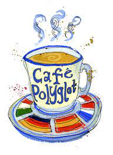

- Polyglot Cafe (11/2018 – 09/2019)

- Green for the Win (Reenty Grant Project) (10/2018)
- Braille all over Serbia - Niš (GYSD Grant Project) (04/2019)
- Hey Bee, Build a CV! (IDEAL Workshop Grant) (05/2019)
- Scientific Research with a theme "Spectrophotometric determination of copper in pregnancy supplements" (01/2019 – 04/2019)
Click here to go back to my home page!